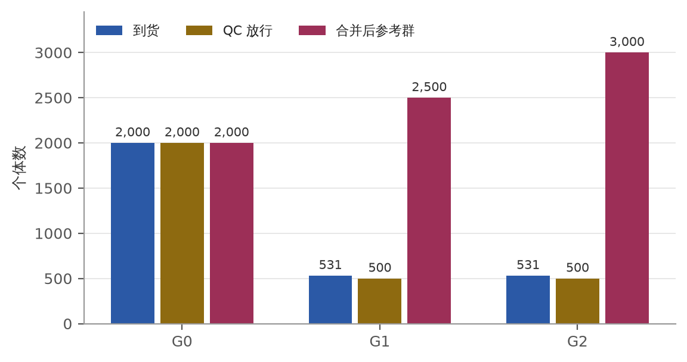
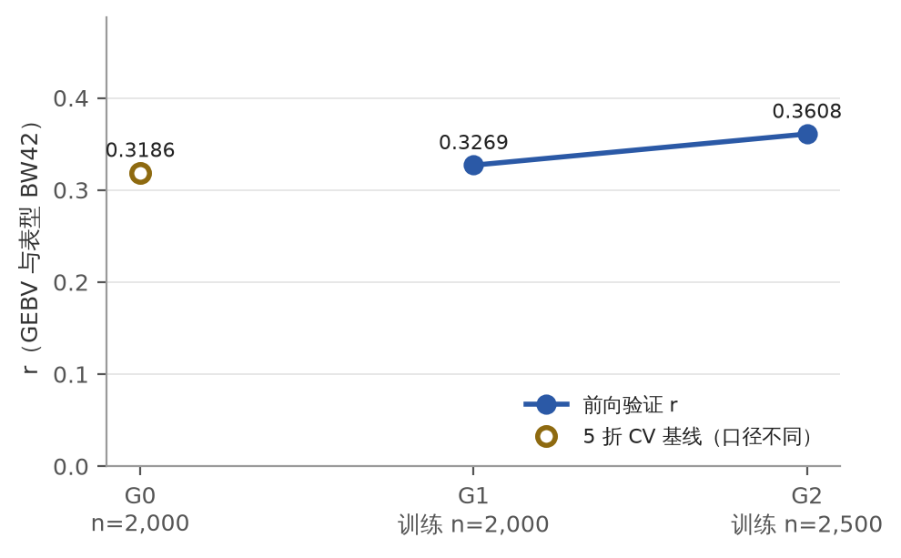
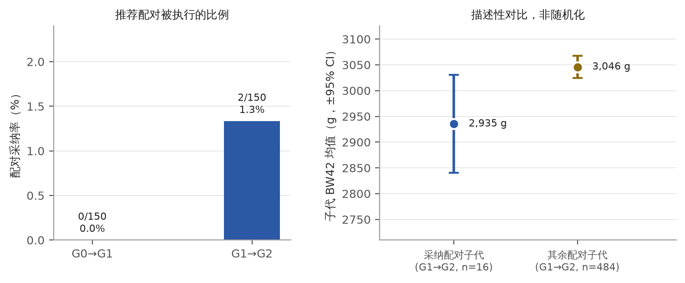

选种台账演示 · 圣农流程（模拟数据）
Demo 3 · 台账界面 —— 从芯片批次到子代结果回流的一条完整链路；页面上每个数字都由 demo3/build.py 从磁盘文件计算得出。
refpop-agent 的模拟器（种子 15），遗传参数为假设值，缺陷样本为故意注入；
客户 ID shengnong_sim 与决策角色 breeding_manager_sim 都是模拟占位。本页不代表任何真实圣农群体的表现，
采纳与子代表现的对比是描述性的（非随机化），不能读成因果效应。1 · 芯片批次 → 2 · 基因型（QC 门禁）
三批到货：G0 是一次性导入的历史参考群，G1、G2 是新世代到货批次。门禁阈值（取自 qc_report.json）： call rate ≥ 0.9，基因型一致率 ≥ 0.995 判重复，亲子对立纯合率 ≤ 0.01， BW42 合理范围 [800, 6,000] g。 注入缺陷共 62 个，拦截命中 62 个（100.0%），误拦 0 个。命中的判据：该样本被拦截，且拦截原因码包含注入清单写明的预期结论码；误拦 = 被拦截但不在注入清单里的样本。
| 批次 | 到货日期 | 到货 | 拦截 | 放行 | 标记数 | 平均 call rate（到货） | 平均 call rate（放行） | 注入缺陷 | 命中 | 误拦 | 放行=干净名单 |
|---|---|---|---|---|---|---|---|---|---|---|---|
| G0 | 2026-02-10 | 2000 | 0 | 2000 | 5000 | 1.0000 | 1.0000 | 0 | 0 | 0 | 是 |
| G1 | 2026-05-19 | 531 | 31 | 500 | 5000 | 0.9902 | 1.0000 | 31 | 31 | 0 | 是 |
| G2 | 2026-08-25 | 531 | 31 | 500 | 5000 | 0.9902 | 1.0000 | 31 | 31 | 0 | 是 |

注入缺陷的拦截（真值来自 data/defects.json）
| 批次 | 缺陷类别 | 注入 | 命中 | 命中率 |
|---|---|---|---|---|
| G1 | 重复个体 | 5 | 5 | 100.0% |
| G1 | 低 call rate | 15 | 15 | 100.0% |
| G1 | 系谱冲突 | 5 | 5 | 100.0% |
| G1 | 表型单位错误 | 6 | 6 | 100.0% |
| G2 | 重复个体 | 5 | 5 | 100.0% |
| G2 | 低 call rate | 15 | 15 | 100.0% |
| G2 | 系谱冲突 | 5 | 5 | 100.0% |
| G2 | 表型单位错误 | 6 | 6 | 100.0% |
QC 原因码触发次数（同一个体可触发多个原因码）
| 批次 | 原因码 | 含义 | 触发次数 |
|---|---|---|---|
| G1 | LOW_CALL_RATE | 低 call rate | 15 |
| G1 | PHENO_UNIT | 表型单位错误 | 6 |
| G1 | PED_MENDEL | 系谱孟德尔不一致 | 4 |
| G1 | DUP_GENO_REF | 与参考群基因型重复 | 3 |
| G1 | DUP_GENO_BATCH | 批内基因型重复 | 2 |
| G1 | DUP_ID | ID 重复 | 1 |
| G1 | PED_GENERATION | 代际矛盾 | 1 |
| G1 | PED_PARENT_UNKNOWN | 亲本不存在 | 1 |
| G1 | PED_SEX | 亲本性别矛盾 | 1 |
| G2 | LOW_CALL_RATE | 低 call rate | 15 |
| G2 | PHENO_UNIT | 表型单位错误 | 6 |
| G2 | PED_MENDEL | 系谱孟德尔不一致 | 4 |
| G2 | DUP_GENO_REF | 与参考群基因型重复 | 3 |
| G2 | DUP_GENO_BATCH | 批内基因型重复 | 2 |
| G2 | DUP_ID | ID 重复 | 1 |
| G2 | PED_GENERATION | 代际矛盾 | 1 |
| G2 | PED_PARENT_UNKNOWN | 亲本不存在 | 1 |
| G2 | PED_SEX | 亲本性别矛盾 | 1 |
3 · 参考群体更新
每批放行个体并入参考群后在全量参考群上重训 GBLUP（RR-BLUP 对偶形式，h² 为假设值 0.3）。 前向验证用上一代为止训练的模型预测本批真实表型；G0 没有上一代，用 5 折 CV 做基线，口径不同，不可与前向 r 直接比较。 r 与斜率均由 predictions.csv 逐个体复算。
| 批次 | 合并前 | 新增 | 合并后 | 训练 n | h²（假设） | λ | GEBV SD（g） | 验证口径 | r（history.json） | r（predictions.csv 复算） | 斜率 b（validation） | 斜率（复算） | 验证 n |
|---|---|---|---|---|---|---|---|---|---|---|---|---|---|
| G0 | 0 | 2000 | 2000 | 2000 | 0.3000 | 4,609.21 | 98.98 | 5 折 CV | 0.3186 | 0.3186 | 0.8920 | 0.8920 | 2000 |
| G1 | 2000 | 500 | 2500 | 2500 | 0.3000 | 4,607.34 | 108.13 | 前向 | 0.3269 | 0.3269 | 1.0670 | 1.0670 | 500 |
| G2 | 2500 | 500 | 3000 | 3000 | 0.3000 | 4,603.91 | 133.76 | 前向 | 0.3608 | 0.3608 | 1.1680 | 1.1680 | 500 |

LR 法统计（部分数据 GEBV ĝp = 上一代模型预测；全量 GEBV ĝw = 本代模型）
依据 Legarra & Reverter 2018 的思路：b 接近 1 表示没有明显的膨胀或压缩；ρ 越高，新数据对排名的改动越小。 两个模型的等位基因频率中心化不同，偏差 Δ 含有中心化差异，只作参考。
| 批次 | n | 偏差 Δ = mean(ĝp) − mean(ĝw)（g） | 离散度 b = cov(ĝw,ĝp)/var(ĝp) | ρ(ĝw, ĝp) |
|---|---|---|---|---|
| G1 | 500 | 24.81 | 1.0130 | 0.8520 |
| G2 | 500 | 18.58 | 0.9940 | 0.8530 |
影子重算的逐头一致率（对应"现金层"：影子运行逐头一致）
在 demo3 里用独立代码按同一闭式解（λ = 2Σpq·(1−h²)/h²）从参考群基因型与表型重新求解，逐头对比 gebv_refpop.csv， 容差 0.01 g：7,500/7,500 头一致（100.0%）。这说明的是"同一数据、同一模型可逐头复现"，不涉及模型好坏。
| 批次 | 个体数 | 逐头一致 | 一致率 | 最大 |Δ|（g） | λ（重算） | λ（落盘） | 前 10% 重合 |
|---|---|---|---|---|---|---|---|
| G0 | 2000 | 2000 | 100.0% | 0.0005 | 4,609.21 | 4,609.21 | 200/200 |
| G1 | 2500 | 2500 | 100.0% | 0.0005 | 4,607.34 | 4,607.34 | 250/250 |
| G2 | 3000 | 3000 | 100.0% | 0.0005 | 4,603.91 | 4,603.91 | 300/300 |
4 · GEBV
候选个体（本批放行个体；G0 为全部历史个体）按 GEBV 排序，取前 10%。GEBV 为相对训练群均值的偏差（g）。
| 批次 | 候选数 | 前 10% 头数 | 前 10% 平均 GEBV（g） | 全体平均 GEBV（g） | 前 10% 入选线（g） | 公/母 | 致死位点携带者 |
|---|---|---|---|---|---|---|---|
| G0 | 2000 | 200 | 176.50 | 0.0000 | 128.90 | 95/105 | 38 |
| G1 | 500 | 50 | 243.10 | 90.00 | 204.20 | 24/26 | 9 |
| G2 | 500 | 50 | 320.40 | 171.20 | 282.60 | 27/23 | 7 |
G2 前 10 名
| 个体 | 性别 | 父本 | 母本 | GEBV（g） | 百分位 | LR1 | LR2 |
|---|---|---|---|---|---|---|---|
| G2_0416 | F | G1_0178 | G1_0135 | 410.69 | 100.00 | - | - |
| G2_0383 | M | G1_0163 | G1_0242 | 405.67 | 99.80 | - | - |
| G2_0364 | F | G1_0178 | G1_0390 | 390.33 | 99.60 | - | - |
| G2_0344 | M | G1_0384 | G1_0027 | 381.11 | 99.40 | - | - |
| G2_0325 | F | G1_0152 | G1_0171 | 370.24 | 99.20 | - | - |
| G2_0445 | M | G1_0036 | G1_0360 | 360.22 | 99.00 | - | - |
| G2_0410 | M | G1_0287 | G1_0505 | 357.17 | 98.80 | - | - |
| G2_0508 | F | G1_0358 | G1_0021 | 357.16 | 98.60 | - | - |
| G2_0339 | M | G1_0158 | G1_0456 | 356.56 | 98.40 | - | - |
| G2_0273 | F | G1_0358 | G1_0021 | 353.36 | 98.20 | - | - |
G0 前 10% 全表（200 头）
| id | sex | sire | dam | gebv | gebv_percentile | carrier_LR1 | carrier_LR2 |
|---|---|---|---|---|---|---|---|
| G0_0780 | F | — | — | 339.42 | 100.00 | - | - |
| G0_0181 | M | — | — | 331.13 | 100.00 | - | - |
| G0_0034 | F | — | — | 294.10 | 99.90 | - | - |
| G0_1080 | F | — | — | 281.95 | 99.80 | - | - |
| G0_1120 | F | — | — | 276.84 | 99.80 | - | - |
| G0_1651 | F | — | — | 266.12 | 99.80 | - | - |
| G0_1239 | F | — | — | 263.25 | 99.70 | - | - |
| G0_1803 | F | — | — | 255.44 | 99.60 | - | - |
| G0_1894 | M | — | — | 255.15 | 99.60 | - | - |
| G0_0631 | F | — | — | 253.29 | 99.60 | - | - |
| G0_0413 | M | — | — | 244.65 | 99.50 | - | - |
| G0_0260 | M | — | — | 242.11 | 99.40 | - | - |
| G0_0394 | F | — | — | 241.13 | 99.40 | - | - |
| G0_1333 | F | — | — | 240.60 | 99.40 | - | - |
| G0_1312 | M | — | — | 239.35 | 99.30 | 携带 | - |
| G0_1561 | F | — | — | 236.79 | 99.20 | - | 携带 |
| G0_1193 | F | — | — | 236.43 | 99.20 | - | - |
| G0_0435 | F | — | — | 227.26 | 99.20 | 携带 | - |
| G0_1571 | F | — | — | 225.47 | 99.10 | 携带 | - |
| G0_1298 | F | — | — | 223.94 | 99.00 | - | - |
| G0_1991 | F | — | — | 221.97 | 99.00 | - | - |
| G0_1457 | F | — | — | 221.79 | 99.00 | - | 携带 |
| G0_1950 | F | — | — | 220.65 | 98.90 | - | 携带 |
| G0_0980 | F | — | — | 220.07 | 98.80 | - | - |
| G0_0148 | M | — | — | 219.96 | 98.80 | - | - |
| G0_0590 | F | — | — | 219.59 | 98.80 | - | - |
| G0_0319 | M | — | — | 219.41 | 98.70 | - | - |
| G0_0708 | F | — | — | 218.45 | 98.60 | - | - |
| G0_1683 | M | — | — | 218.30 | 98.60 | - | - |
| G0_0841 | M | — | — | 217.50 | 98.60 | - | - |
| G0_0842 | F | — | — | 216.95 | 98.50 | - | - |
| G0_0100 | F | — | — | 215.73 | 98.40 | - | 携带 |
| G0_1221 | M | — | — | 215.57 | 98.40 | - | - |
| G0_0205 | M | — | — | 214.60 | 98.40 | - | - |
| G0_0065 | F | — | — | 213.73 | 98.30 | - | - |
| G0_1744 | M | — | — | 213.25 | 98.20 | - | - |
| G0_0769 | M | — | — | 212.25 | 98.20 | - | 携带 |
| G0_0509 | M | — | — | 212.23 | 98.20 | - | - |
| G0_0207 | F | — | — | 210.47 | 98.10 | - | 携带 |
| G0_0729 | M | — | — | 209.28 | 98.00 | - | - |
| G0_0167 | M | — | — | 208.93 | 98.00 | - | - |
| G0_0676 | F | — | — | 208.64 | 98.00 | - | 携带 |
| G0_1636 | M | — | — | 208.50 | 97.90 | - | - |
| G0_0048 | M | — | — | 207.07 | 97.80 | - | - |
| G0_1136 | F | — | — | 205.21 | 97.80 | - | - |
| G0_0350 | M | — | — | 204.57 | 97.80 | - | - |
| G0_0273 | M | — | — | 204.03 | 97.70 | - | - |
| G0_1865 | M | — | — | 202.84 | 97.60 | - | - |
| G0_1605 | F | — | — | 202.77 | 97.60 | - | - |
| G0_1666 | F | — | — | 200.86 | 97.60 | - | 携带 |
| G0_0296 | M | — | — | 198.96 | 97.50 | - | - |
| G0_1319 | M | — | — | 197.94 | 97.40 | 携带 | - |
| G0_1978 | M | — | — | 197.22 | 97.40 | - | - |
| G0_0150 | M | — | — | 196.63 | 97.40 | - | - |
| G0_1698 | M | — | — | 196.16 | 97.30 | - | 携带 |
| G0_0686 | F | — | — | 196.13 | 97.20 | - | - |
| G0_0253 | M | — | — | 195.99 | 97.20 | - | - |
| G0_0483 | M | — | — | 195.10 | 97.20 | - | - |
| G0_0502 | F | — | — | 194.99 | 97.10 | - | - |
| G0_1899 | F | — | — | 194.82 | 97.00 | - | - |
| G0_0061 | F | — | — | 192.13 | 97.00 | - | 携带 |
| G0_1085 | M | — | — | 191.33 | 97.00 | - | - |
| G0_0364 | F | — | — | 190.84 | 96.90 | - | - |
| G0_0120 | M | — | — | 189.25 | 96.80 | - | - |
| G0_1356 | M | — | — | 188.73 | 96.80 | - | - |
| G0_1995 | F | — | — | 188.53 | 96.80 | - | - |
| G0_0431 | M | — | — | 188.01 | 96.70 | - | - |
| G0_0471 | M | — | — | 185.89 | 96.60 | - | - |
| G0_0567 | F | — | — | 185.33 | 96.60 | - | - |
| G0_0720 | M | — | — | 184.43 | 96.60 | - | - |
| G0_0412 | M | — | — | 184.23 | 96.50 | - | - |
| G0_0366 | M | — | — | 183.79 | 96.40 | - | - |
| G0_1417 | M | — | — | 182.94 | 96.40 | - | 携带 |
| G0_1706 | M | — | — | 182.22 | 96.40 | - | - |
| G0_1888 | F | — | — | 182.12 | 96.30 | - | - |
| G0_0092 | M | — | — | 181.91 | 96.20 | - | - |
| G0_1800 | F | — | — | 181.87 | 96.20 | - | - |
| G0_1375 | F | — | — | 181.12 | 96.20 | - | - |
| G0_0020 | M | — | — | 179.90 | 96.10 | - | - |
| G0_1116 | M | — | — | 179.58 | 96.00 | - | - |
| G0_1853 | M | — | — | 179.52 | 96.00 | - | 携带 |
| G0_1364 | F | — | — | 179.04 | 96.00 | - | - |
| G0_0840 | M | — | — | 177.93 | 95.90 | - | 携带 |
| G0_0989 | F | — | — | 177.79 | 95.80 | - | - |
| G0_1014 | F | — | — | 177.57 | 95.80 | - | - |
| G0_0746 | F | — | — | 177.56 | 95.80 | - | - |
| G0_0883 | F | — | — | 176.07 | 95.70 | - | - |
| G0_1096 | F | — | — | 176.01 | 95.60 | - | - |
| G0_0411 | F | — | — | 175.84 | 95.60 | - | - |
| G0_1632 | F | — | — | 174.58 | 95.60 | 携带 | - |
| G0_1022 | F | — | — | 174.44 | 95.50 | - | - |
| G0_1594 | F | — | — | 173.87 | 95.40 | - | - |
| G0_1130 | F | — | — | 173.30 | 95.40 | - | - |
| G0_0579 | F | — | — | 172.38 | 95.40 | - | - |
| G0_0771 | M | — | — | 171.89 | 95.30 | 携带 | - |
| G0_0110 | M | — | — | 171.06 | 95.20 | - | - |
| G0_1294 | F | — | — | 169.97 | 95.20 | - | 携带 |
| G0_0018 | F | — | — | 169.56 | 95.20 | - | - |
| G0_1917 | F | — | — | 169.55 | 95.10 | - | - |
| G0_1577 | F | — | — | 168.17 | 95.00 | - | - |
| G0_0839 | F | — | — | 167.56 | 95.00 | - | - |
| G0_0368 | M | — | — | 166.90 | 95.00 | - | - |
| G0_0473 | M | — | — | 166.16 | 94.90 | - | 携带 |
| G0_0284 | F | — | — | 166.04 | 94.80 | - | - |
| G0_1527 | F | — | — | 165.65 | 94.80 | - | - |
| G0_0305 | F | — | — | 164.78 | 94.80 | - | - |
| G0_0070 | M | — | — | 163.93 | 94.70 | - | - |
| G0_1032 | F | — | — | 163.83 | 94.60 | - | - |
| G0_0308 | M | — | — | 162.89 | 94.60 | 携带 | - |
| G0_0248 | F | — | — | 162.60 | 94.60 | - | - |
| G0_0685 | M | — | — | 162.26 | 94.50 | - | - |
| G0_0004 | F | — | — | 161.85 | 94.40 | - | - |
| G0_0476 | F | — | — | 161.83 | 94.40 | - | - |
| G0_1449 | M | — | — | 161.70 | 94.40 | 携带 | - |
| G0_1898 | M | — | — | 161.42 | 94.30 | - | - |
| G0_1515 | M | — | — | 161.10 | 94.20 | - | 携带 |
| G0_0950 | F | — | — | 159.17 | 94.20 | - | - |
| G0_1974 | M | — | — | 158.82 | 94.20 | - | - |
| G0_1877 | F | — | — | 158.71 | 94.10 | - | - |
| G0_0116 | F | — | — | 158.60 | 94.00 | - | 携带 |
| G0_1154 | M | — | — | 158.57 | 94.00 | - | - |
| G0_1758 | M | — | — | 158.07 | 94.00 | - | - |
| G0_1966 | F | — | — | 157.65 | 93.90 | 携带 | - |
| G0_0497 | F | — | — | 157.29 | 93.80 | - | - |
| G0_0406 | F | — | — | 157.14 | 93.80 | 携带 | - |
| G0_1099 | F | — | — | 156.80 | 93.80 | - | - |
| G0_1597 | M | — | — | 156.53 | 93.70 | - | - |
| G0_0555 | M | — | — | 156.30 | 93.60 | - | - |
| G0_0574 | F | — | — | 155.45 | 93.60 | - | - |
| G0_0332 | M | — | — | 154.37 | 93.60 | - | - |
| G0_1936 | F | — | — | 153.78 | 93.50 | - | - |
| G0_0264 | F | — | — | 152.63 | 93.40 | - | - |
| G0_1231 | M | — | — | 152.38 | 93.40 | - | - |
| G0_1429 | M | — | — | 152.12 | 93.40 | - | - |
| G0_0019 | F | — | — | 151.38 | 93.30 | - | - |
| G0_1325 | F | — | — | 150.40 | 93.20 | - | - |
| G0_1686 | F | — | — | 149.49 | 93.20 | - | - |
| G0_1731 | F | — | — | 149.35 | 93.20 | - | - |
| G0_1668 | M | — | — | 149.12 | 93.10 | - | - |
| G0_0739 | M | — | — | 148.48 | 93.00 | - | - |
| G0_0700 | M | — | — | 146.41 | 93.00 | - | - |
| G0_0216 | F | — | — | 146.18 | 93.00 | - | - |
| G0_1438 | F | — | — | 146.05 | 92.90 | - | - |
| G0_1504 | F | — | — | 145.24 | 92.80 | - | 携带 |
| G0_0151 | M | — | — | 145.10 | 92.80 | - | - |
| G0_0094 | M | — | — | 145.06 | 92.80 | - | - |
| G0_0518 | M | — | — | 144.96 | 92.70 | - | - |
| G0_1316 | F | — | — | 144.88 | 92.60 | - | - |
| G0_1908 | M | — | — | 144.72 | 92.60 | - | - |
| G0_1314 | M | — | — | 143.71 | 92.60 | - | - |
| G0_1102 | M | — | — | 143.47 | 92.50 | - | - |
| G0_1393 | F | — | — | 143.34 | 92.40 | - | - |
| G0_0637 | F | — | — | 143.30 | 92.40 | - | 携带 |
| G0_0501 | M | — | — | 142.96 | 92.40 | - | - |
| G0_0093 | F | — | — | 142.19 | 92.30 | - | - |
| G0_1073 | M | — | — | 141.35 | 92.20 | - | - |
| G0_1000 | M | — | — | 141.33 | 92.20 | - | - |
| G0_1788 | F | — | — | 141.16 | 92.20 | - | - |
| G0_0157 | F | — | — | 140.80 | 92.10 | - | - |
| G0_0396 | F | — | — | 140.80 | 92.00 | - | 携带 |
| G0_0587 | M | — | — | 140.60 | 92.00 | - | - |
| G0_1738 | M | — | — | 140.38 | 92.00 | - | 携带 |
| G0_1985 | F | — | — | 140.29 | 91.90 | - | - |
| G0_1840 | F | — | — | 140.15 | 91.80 | - | - |
| G0_1446 | F | — | — | 139.57 | 91.80 | - | - |
| G0_1818 | M | — | — | 138.86 | 91.80 | - | - |
| G0_0053 | F | — | — | 138.83 | 91.70 | 携带 | 携带 |
| G0_1994 | F | — | — | 138.72 | 91.60 | - | - |
| G0_0894 | M | — | — | 138.64 | 91.60 | - | - |
| G0_0323 | F | — | — | 138.40 | 91.60 | - | - |
| G0_1682 | F | — | — | 137.10 | 91.50 | 携带 | - |
| G0_1658 | M | — | — | 136.73 | 91.40 | 携带 | 携带 |
| G0_1929 | F | — | — | 136.54 | 91.40 | - | - |
| G0_1531 | F | — | — | 136.46 | 91.40 | - | - |
| G0_0514 | M | — | — | 135.63 | 91.30 | - | - |
| G0_1809 | M | — | — | 135.23 | 91.20 | - | - |
| G0_1114 | M | — | — | 134.95 | 91.20 | - | 携带 |
| G0_0462 | F | — | — | 134.90 | 91.20 | 携带 | - |
| G0_1433 | F | — | — | 134.80 | 91.10 | - | - |
| G0_0781 | M | — | — | 134.68 | 91.00 | - | 携带 |
| G0_0809 | M | — | — | 134.57 | 91.00 | - | - |
| G0_0972 | M | — | — | 134.44 | 91.00 | - | - |
| G0_0806 | M | — | — | 134.17 | 90.90 | - | - |
| G0_0007 | M | — | — | 134.15 | 90.80 | - | - |
| G0_0811 | F | — | — | 133.45 | 90.80 | - | - |
| G0_1902 | F | — | — | 133.40 | 90.80 | - | - |
| G0_1077 | M | — | — | 133.17 | 90.70 | - | - |
| G0_1123 | F | — | — | 132.95 | 90.60 | - | - |
| G0_0345 | M | — | — | 132.77 | 90.60 | - | - |
| G0_0010 | F | — | — | 132.69 | 90.60 | - | - |
| G0_1862 | M | — | — | 132.30 | 90.50 | - | - |
| G0_1681 | M | — | — | 131.42 | 90.40 | - | - |
| G0_1868 | M | — | — | 131.02 | 90.40 | - | - |
| G0_0270 | F | — | — | 130.41 | 90.40 | 携带 | - |
| G0_1728 | M | — | — | 129.61 | 90.30 | - | - |
| G0_1334 | F | — | — | 129.49 | 90.20 | - | - |
| G0_1372 | M | — | — | 129.35 | 90.20 | - | - |
| G0_0522 | F | — | — | 129.25 | 90.20 | - | - |
| G0_1205 | M | — | — | 129.11 | 90.10 | - | - |
| G0_1083 | M | — | — | 128.93 | 90.00 | - | - |
G1 前 10% 全表（50 头）
| id | sex | sire | dam | gebv | gebv_percentile | carrier_LR1 | carrier_LR2 |
|---|---|---|---|---|---|---|---|
| G1_0332 | F | G0_0826 | G0_1731 | 340.33 | 100.00 | - | - |
| G1_0502 | F | G0_0517 | G0_1294 | 310.62 | 99.80 | - | 携带 |
| G1_0242 | F | G0_1061 | G0_1651 | 300.94 | 99.60 | - | - |
| G1_0027 | F | G0_1683 | G0_1193 | 299.68 | 99.40 | - | - |
| G1_0390 | F | G0_0473 | G0_0839 | 298.39 | 99.20 | - | 携带 |
| G1_0505 | F | G0_0841 | G0_0093 | 293.30 | 99.00 | - | - |
| G1_0334 | M | G0_0841 | G0_0933 | 289.14 | 98.80 | - | - |
| G1_0247 | M | G0_0841 | G0_0248 | 271.17 | 98.60 | - | - |
| G1_0178 | M | G0_1061 | G0_1651 | 271.00 | 98.40 | - | - |
| G1_0342 | F | G0_0841 | G0_1608 | 262.02 | 98.20 | - | - |
| G1_0171 | F | G0_0473 | G0_0839 | 258.50 | 98.00 | - | - |
| G1_0364 | F | G0_0167 | G0_1526 | 257.97 | 97.80 | - | - |
| G1_0313 | M | G0_1419 | G0_1991 | 256.39 | 97.60 | - | - |
| G1_0023 | F | G0_1597 | G0_0293 | 251.89 | 97.40 | - | - |
| G1_0440 | M | G0_0473 | G0_0579 | 251.38 | 97.20 | - | 携带 |
| G1_0152 | M | G0_0523 | G0_0507 | 250.54 | 97.00 | - | - |
| G1_0189 | F | G0_1923 | G0_0722 | 249.58 | 96.80 | - | - |
| G1_0430 | F | G0_0198 | G0_0989 | 246.44 | 96.60 | - | - |
| G1_0377 | M | G0_0841 | G0_1608 | 246.44 | 96.40 | - | - |
| G1_0138 | F | G0_1923 | G0_1899 | 243.57 | 96.20 | - | - |
| G1_0305 | F | G0_1314 | G0_1527 | 242.68 | 96.00 | - | - |
| G1_0162 | F | G0_1923 | G0_1393 | 242.25 | 95.80 | - | - |
| G1_0203 | F | G0_1683 | G0_0386 | 241.61 | 95.60 | - | - |
| G1_0116 | M | G0_1315 | G0_1305 | 232.94 | 95.40 | - | 携带 |
| G1_0345 | F | G0_0198 | G0_0010 | 232.36 | 95.20 | - | - |
| G1_0315 | M | G0_1157 | G0_0713 | 232.15 | 95.00 | - | 携带 |
| G1_0387 | F | G0_0826 | G0_1420 | 231.81 | 94.80 | - | - |
| G1_0406 | M | G0_1464 | G0_1967 | 231.69 | 94.60 | - | 携带 |
| G1_0384 | M | G0_1157 | G0_0713 | 231.07 | 94.40 | - | - |
| G1_0198 | F | G0_0846 | G0_0480 | 230.26 | 94.20 | 携带 | - |
| G1_0456 | F | G0_0473 | G0_1406 | 229.82 | 94.00 | - | 携带 |
| G1_0090 | M | G0_1978 | G0_1538 | 229.22 | 93.80 | - | - |
| G1_0036 | M | G0_1157 | G0_1827 | 225.44 | 93.60 | - | - |
| G1_0361 | M | G0_0841 | G0_0248 | 225.32 | 93.40 | - | - |
| G1_0368 | F | G0_0473 | G0_0579 | 225.32 | 93.20 | - | 携带 |
| G1_0523 | M | G0_1683 | G0_1120 | 224.19 | 93.00 | - | - |
| G1_0194 | M | G0_1157 | G0_0713 | 222.52 | 92.80 | - | - |
| G1_0085 | M | G0_0332 | G0_1333 | 221.68 | 92.60 | - | - |
| G1_0048 | M | G0_1387 | G0_0422 | 218.63 | 92.40 | - | - |
| G1_0473 | F | G0_1510 | G0_0661 | 217.62 | 92.20 | - | - |
| G1_0326 | M | G0_1314 | G0_1527 | 217.60 | 92.00 | - | - |
| G1_0045 | M | G0_1683 | G0_0189 | 215.35 | 91.80 | - | - |
| G1_0290 | M | G0_1419 | G0_0101 | 215.28 | 91.60 | - | - |
| G1_0067 | F | G0_1356 | G0_0762 | 215.01 | 91.40 | - | - |
| G1_0366 | M | G0_1978 | G0_0633 | 213.76 | 91.20 | - | - |
| G1_0211 | M | G0_0596 | G0_0883 | 212.79 | 91.00 | - | - |
| G1_0468 | F | G0_1387 | G0_0999 | 210.35 | 90.80 | - | - |
| G1_0360 | F | G0_0517 | G0_1650 | 208.04 | 90.60 | - | - |
| G1_0462 | F | G0_0841 | G0_0933 | 205.30 | 90.40 | - | - |
| G1_0249 | M | G0_0167 | G0_1526 | 204.23 | 90.20 | - | - |
G2 前 10% 全表（50 头）
| id | sex | sire | dam | gebv | gebv_percentile | carrier_LR1 | carrier_LR2 |
|---|---|---|---|---|---|---|---|
| G2_0416 | F | G1_0178 | G1_0135 | 410.69 | 100.00 | - | - |
| G2_0383 | M | G1_0163 | G1_0242 | 405.67 | 99.80 | - | - |
| G2_0364 | F | G1_0178 | G1_0390 | 390.33 | 99.60 | - | - |
| G2_0344 | M | G1_0384 | G1_0027 | 381.11 | 99.40 | - | - |
| G2_0325 | F | G1_0152 | G1_0171 | 370.24 | 99.20 | - | - |
| G2_0445 | M | G1_0036 | G1_0360 | 360.22 | 99.00 | - | - |
| G2_0410 | M | G1_0287 | G1_0505 | 357.17 | 98.80 | - | - |
| G2_0508 | F | G1_0358 | G1_0021 | 357.16 | 98.60 | - | - |
| G2_0339 | M | G1_0158 | G1_0456 | 356.56 | 98.40 | - | - |
| G2_0273 | F | G1_0358 | G1_0021 | 353.36 | 98.20 | - | - |
| G2_0257 | F | G1_0287 | G1_0505 | 344.78 | 98.00 | - | - |
| G2_0530 | M | G1_0163 | G1_0242 | 343.69 | 97.80 | - | - |
| G2_0468 | M | G1_0406 | G1_0430 | 341.09 | 97.60 | - | 携带 |
| G2_0233 | F | G1_0326 | G1_0332 | 339.89 | 97.40 | - | - |
| G2_0351 | F | G1_0178 | G1_0135 | 336.73 | 97.20 | - | - |
| G2_0209 | M | G1_0406 | G1_0023 | 331.64 | 97.00 | - | 携带 |
| G2_0149 | M | G1_0406 | G1_0430 | 329.43 | 96.80 | - | 携带 |
| G2_0317 | F | G1_0248 | G1_0447 | 328.06 | 96.60 | - | - |
| G2_0420 | F | G1_0521 | G1_0495 | 327.38 | 96.40 | - | - |
| G2_0197 | M | G1_0152 | G1_0171 | 327.24 | 96.20 | - | - |
| G2_0443 | M | G1_0358 | G1_0021 | 322.85 | 96.00 | - | - |
| G2_0145 | F | G1_0406 | G1_0430 | 318.46 | 95.80 | - | 携带 |
| G2_0061 | M | G1_0326 | G1_0332 | 318.33 | 95.60 | - | - |
| G2_0001 | F | G1_0326 | G1_0332 | 311.73 | 95.40 | - | - |
| G2_0227 | M | G1_0406 | G1_0023 | 306.11 | 95.20 | - | 携带 |
| G2_0347 | M | G1_0358 | G1_0021 | 305.19 | 95.00 | - | - |
| G2_0150 | M | G1_0407 | G1_0345 | 304.39 | 94.80 | - | - |
| G2_0110 | M | G1_0202 | G1_0268 | 304.19 | 94.60 | - | - |
| G2_0388 | M | G1_0313 | G1_0176 | 304.07 | 94.40 | - | - |
| G2_0527 | F | G1_0140 | G1_0462 | 303.47 | 94.20 | - | - |
| G2_0087 | M | G1_0358 | G1_0021 | 303.37 | 94.00 | - | - |
| G2_0525 | F | G1_0326 | G1_0332 | 302.81 | 93.80 | - | - |
| G2_0017 | M | G1_0521 | G1_0495 | 301.94 | 93.60 | - | 携带 |
| G2_0103 | M | G1_0178 | G1_0135 | 300.30 | 93.40 | - | - |
| G2_0185 | M | G1_0384 | G1_0295 | 298.31 | 93.20 | - | - |
| G2_0403 | F | G1_0202 | G1_0385 | 296.38 | 93.00 | - | - |
| G2_0238 | F | G1_0034 | G1_0091 | 294.55 | 92.80 | - | - |
| G2_0310 | F | G1_0424 | G1_0441 | 293.51 | 92.60 | - | - |
| G2_0118 | F | G1_0521 | G1_0495 | 291.72 | 92.40 | - | 携带 |
| G2_0139 | F | G1_0178 | G1_0390 | 291.18 | 92.20 | - | - |
| G2_0393 | F | G1_0358 | G1_0021 | 291.17 | 92.00 | - | - |
| G2_0159 | F | G1_0036 | G1_0360 | 289.76 | 91.80 | - | - |
| G2_0311 | M | G1_0178 | G1_0390 | 285.59 | 91.60 | - | - |
| G2_0164 | M | G1_0010 | G1_0138 | 285.31 | 91.40 | - | - |
| G2_0125 | M | G1_0152 | G1_0171 | 284.65 | 91.20 | - | - |
| G2_0035 | M | G1_0103 | G1_0415 | 284.56 | 91.00 | - | - |
| G2_0431 | M | G1_0036 | G1_0360 | 283.87 | 90.80 | - | - |
| G2_0063 | M | G1_0433 | G1_0078 | 283.04 | 90.60 | - | - |
| G2_0480 | F | G1_0152 | G1_0171 | 283.00 | 90.40 | - | - |
| G2_0305 | F | G1_0384 | G1_0027 | 282.64 | 90.20 | - | - |
5 · 留种与选配建议
贪心配对规则（取自 mating_summary.json）：预期子代近交系数 F ≤ 0.0625；每只公鸡最多配 8 只母鸡； 隐性致死位点 携带者×携带者 禁配；携带者×正常 允许并标注。下表的"携带者×携带者"列由 candidates.csv 的携带者标记对 mating_pairs.csv 逐对复查。
| 批次 | 配对数 | 用公鸡 | 用母鸡 | 公/母候选池 | 预期子代 F 最大 | F 上限 | 单公配母最多 | 携带者×携带者 | 携带者×正常（已标注） | 因近交被拒尝试 | 因携带者规则被拒尝试 | 平均预期子代 GEBV（g） |
|---|---|---|---|---|---|---|---|---|---|---|---|---|
| G0 | 150 | 19 | 150 | 30/150 | 0.0623 | 0.0625 | 8（上限 8） | 0 | 43 | 5 | 0 | 193.60 |
| G1 | 150 | 19 | 150 | 30/150 | 0.0606 | 0.0625 | 8（上限 8） | 0 | 54 | 12 | 4 | 189.80 |
| G2 | 150 | 19 | 150 | 30/150 | 0.0589 | 0.0625 | 8（上限 8） | 0 | 64 | 19 | 7 | 281.00 |
G2 推荐配对前 10 对
| 序 | 公鸡 | 公 GEBV | 母鸡 | 母 GEBV | 预期子代 GEBV | 预期子代 F | 携带者标注 |
|---|---|---|---|---|---|---|---|
| 1 | G2_0383 | 405.67 | G2_0416 | 410.69 | 408.18 | 0.0433 | — |
| 2 | G2_0383 | 405.67 | G2_0325 | 370.24 | 387.96 | 0.0197 | — |
| 3 | G2_0344 | 381.11 | G2_0364 | 390.33 | 385.72 | -0.0252 | — |
| 4 | G2_0383 | 405.67 | G2_0273 | 353.36 | 379.51 | 0.0483 | — |
| 5 | G2_0383 | 405.67 | G2_0257 | 344.78 | 375.22 | 0.0107 | — |
| 6 | G2_0383 | 405.67 | G2_0233 | 339.89 | 372.78 | -0.0099 | — |
| 7 | G2_0344 | 381.11 | G2_0508 | 357.16 | 369.13 | 0.0522 | — |
| 8 | G2_0383 | 405.67 | G2_0317 | 328.06 | 366.86 | 0.0387 | — |
| 9 | G2_0383 | 405.67 | G2_0420 | 327.38 | 366.52 | 0.0366 | — |
| 10 | G2_0383 | 405.67 | G2_0145 | 318.46 | 362.06 | -0.0253 | 母本LR2携带 |
6 · 采纳记录 → 7 · 子代结果回流（第五层台账）
用 ABL 的 registry API 把 G0、G1 的每个推荐配对写成 recommendations 行（score = 双亲 GEBV 均值），
再对照下一批系谱判定是否被执行，写入 decisions；被执行的配对，其每个通过 QC 的子代的 BW42 写入 outcomes。
G2 的 150 个推荐配对还没有下一代数据，未写入台账。台账文件：demo3/ledger.sqlite。
| 推荐批次 | 回流批次 | 推荐配对 | 采纳 | 采纳率 | 回流子代（台账 outcomes） | 被 QC 挡下的子代 | 随机对照标记 | 推荐公鸡被用作父本 | 推荐母鸡被用作母本 | 下一代实际配对数 |
|---|---|---|---|---|---|---|---|---|---|---|
| G0 | G1 | 150 | 0 | 0.0% | 0 | 0 | 0 | 3/19 | 96/150 | 195 |
| G1 | G2 | 150 | 2 | 1.3% | 16 | 0 | 15 | 10/19 | 70/150 | 78 |

| 推荐批次 | 组 | 子代数 | BW42 均值（g） | 95% CI 半宽（g） |
|---|---|---|---|---|
| G0 | 采纳的推荐配对（台账 v_realized） | 0 | — | — |
| G0 | 同批其余配对（台账外参照） | 500 | 2,910.5 | 20.9 |
| G1 | 采纳的推荐配对（台账 v_realized） | 16 | 2,935.4 | 95.4 |
| G1 | 同批其余配对（台账外参照） | 484 | 3,046.0 | 21.5 |
怎么读：采纳率很低（G0 为 0.0% 与 G1 为 1.3%）， 原因在模拟器本身：它从上一代 GEBV 靠前的个体里随机抽亲本、随机组配，不读取选配建议（见 refpop-agent README"代际选择"）。 所以推荐的个体常被留种（见"推荐母鸡被用作母本"一列），但具体配对几乎不会重合。这是模拟设定的结果，不是对任何客户采纳习惯的估计。 G1 被采纳配对的子代 BW42 均值比同批其余配对低 110.5 g，但只有 16 头、来自 2 个配对，置信区间很宽，而且谁被采纳并非随机，这个差别既不能读成推荐有害，也不能读成推荐有益。
randomized_control 字段
G1 的推荐中按固定种子 15 抽取 15 条（10%）标记为 randomized_control = 1，
其中被采纳的有 0 条。在模拟中这个标记只是占位：它演示字段能被写入、能在 v_realized 中分组；
真正的随机对照需要客户按随机分配执行一轮配种，届时才能得到无混杂的对比。
台账样例行（recommendations ⨝ decisions，前 8 行）
| rec_id | selection_date | animal_id | score | rank | pct_rank | recommended_action | randomized_control | adopted | actual_action |
|---|---|---|---|---|---|---|---|---|---|
| rec_G1_31 | G1 | G1_0313xG1_0176 | 219.54 | 31 | 0.2000 | mate_with:G1_0176 | 0 | 1 | mated |
| rec_G1_42 | G1 | G1_0152xG1_0417 | 208.72 | 42 | 0.2733 | mate_with:G1_0417 | 0 | 1 | mated |
| rec_G0_1 | G0 | G0_0181xG0_0780 | 335.27 | 1 | 0.0000 | mate_with:G0_0780 | 0 | 0 | not_mated |
| rec_G0_2 | G0 | G0_0181xG0_0034 | 312.62 | 2 | 0.0067 | mate_with:G0_0034 | 0 | 0 | not_mated |
| rec_G0_3 | G0 | G0_0181xG0_1080 | 306.54 | 3 | 0.0133 | mate_with:G0_1080 | 0 | 0 | not_mated |
| rec_G0_4 | G0 | G0_0181xG0_1120 | 303.99 | 4 | 0.0200 | mate_with:G0_1120 | 0 | 0 | not_mated |
| rec_G0_5 | G0 | G0_0181xG0_1651 | 298.63 | 5 | 0.0267 | mate_with:G0_1651 | 0 | 0 | not_mated |
| rec_G0_6 | G0 | G0_0181xG0_1239 | 297.19 | 6 | 0.0333 | mate_with:G0_1239 | 0 | 0 | not_mated |
验证带宽
= 500 / 1 = 500
- samples_per_year = 新世代批次（G1、G2）平均放行头数 500 × 每年批次数 1（假设：一批 = 一个世代 ≈ 1 年）。G0 的 2,000 头是一次性导入的历史群，不计入年通量。
- label_latency_years = 1（假设）：BW42 在本世代内测定，但台账要的"推荐 → 子代表现"标签要等一个世代才回流。
- 注意：模拟 manifest 的到货日期相隔约 98 天，若按日历折算约每年 3.7 批、samples_per_year ≈ 1,864。 模拟器的日历日期和"一代 ≈ 1 年"的设定不一致，本页主口径按后者。
附录
A · 台账核对查询（SQLite 只读连接，视图来自 abl/registry/views.sql）
表行数
SELECT 'data_snapshots' AS tbl, COUNT(*) AS n FROM data_snapshots
UNION ALL SELECT 'recommendations', COUNT(*) FROM recommendations
UNION ALL SELECT 'decisions', COUNT(*) FROM decisions
UNION ALL SELECT 'outcomes', COUNT(*) FROM outcomes| tbl | n |
|---|---|
| data_snapshots | 2 |
| recommendations | 300 |
| decisions | 300 |
| outcomes | 16 |
v_adoption（按排名分档）
SELECT candidate_id, rank_bucket, recommendations, adopted,
ROUND(adoption_rate, 4) AS adoption_rate
FROM v_adoption ORDER BY candidate_id, rank_bucket| candidate_id | rank_bucket | recommendations | adopted | adoption_rate |
|---|---|---|---|---|
| refpop_gblup_G0 | bottom | 75 | 0 | 0.0000 |
| refpop_gblup_G0 | mid | 60 | 0 | 0.0000 |
| refpop_gblup_G0 | top10 | 15 | 0 | 0.0000 |
| refpop_gblup_G1 | bottom | 75 | 0 | 0.0000 |
| refpop_gblup_G1 | mid | 60 | 2 | 0.0333 |
| refpop_gblup_G1 | top10 | 15 | 0 | 0.0000 |
每批采纳率（汇总 v_adoption）
SELECT candidate_id,
SUM(recommendations) AS recommendations,
SUM(adopted) AS adopted,
1.0 * SUM(adopted) / SUM(recommendations) AS adoption_rate
FROM v_adoption GROUP BY candidate_id ORDER BY candidate_id| candidate_id | recommendations | adopted | adoption_rate |
|---|---|---|---|
| refpop_gblup_G0 | 150 | 0 | 0.0000 |
| refpop_gblup_G1 | 150 | 2 | 0.0133 |
v_realized（子代 BW42，描述性）
SELECT selection_date, outcome_type, adopted, randomized_control,
n, ROUND(mean_outcome, 2) AS mean_outcome
FROM v_realized ORDER BY selection_date, adopted, randomized_control| selection_date | outcome_type | adopted | randomized_control | n | mean_outcome |
|---|---|---|---|---|---|
| G1 | progeny_phenotype | 1 | 0 | 16 | 2,935.44 |
随机对照标记
SELECT selection_date, randomized_control, COUNT(*) AS n
FROM recommendations GROUP BY selection_date, randomized_control
ORDER BY selection_date, randomized_control| selection_date | randomized_control | n |
|---|---|---|
| G0 | 0 | 150 |
| G1 | 0 | 135 |
| G1 | 1 | 15 |
完整性：孤儿行与口径检查
SELECT
(SELECT COUNT(*) FROM decisions d LEFT JOIN recommendations r ON r.rec_id = d.rec_id
WHERE r.rec_id IS NULL) AS orphan_decisions,
(SELECT COUNT(*) FROM outcomes o LEFT JOIN recommendations r ON r.rec_id = o.rec_id
WHERE r.rec_id IS NULL) AS orphan_outcomes,
(SELECT COUNT(*) FROM outcomes o JOIN decisions d ON d.rec_id = o.rec_id
WHERE d.adopted = 0) AS outcomes_on_not_adopted,
(SELECT COUNT(*) FROM recommendations r LEFT JOIN decisions d ON d.rec_id = r.rec_id
WHERE d.rec_id IS NULL) AS recs_without_decision,
(SELECT COUNT(*) FROM recommendations r
LEFT JOIN data_snapshots s ON s.snapshot_id = r.snapshot_id
WHERE s.snapshot_id IS NULL) AS recs_without_snapshot| orphan_decisions | orphan_outcomes | outcomes_on_not_adopted | recs_without_decision | recs_without_snapshot |
|---|---|---|---|---|
| 0 | 0 | 0 | 0 | 0 |
DuckDB 独立复算（同一批台账行，另一 SQL 引擎）
SELECT r.selection_date,
COUNT(DISTINCT r.rec_id) AS recs,
COUNT(DISTINCT CASE WHEN d.adopted = 1 THEN r.rec_id END) AS adopted,
COUNT(o.outcome_id) AS n_progeny,
AVG(o.value) AS mean_bw42
FROM recs r JOIN decs d USING (rec_id) LEFT JOIN outs o USING (rec_id)
GROUP BY r.selection_date ORDER BY r.selection_date| selection_date | recs | adopted | n_progeny | mean_bw42 |
|---|---|---|---|---|
| G0 | 150 | 0 | 0 | NULL |
| G1 | 150 | 2 | 16 | 2,935.44 |
B · 输入文件哈希
阈值文件 abl/gates/thresholds.yaml sha256：03aced4eec69a7528e1e73bd15a9d25cfa919b151fa2aeae9efb5a605010a66e（本 demo 未改动任何阈值）。
| 文件 | sha256 |
|---|---|
| refpop-agent/artifacts/history.json | 130410a0e3b72a65482d74a125de2b5f77f23d4ead2e90fc1628b9b85b48d102 |
| refpop-agent/artifacts/models/model_G0.json | e7fa708ebf1f58e0a556d8ff8fea715db6c881e54b7cf7e8ddeb6acb52c053e8 |
| refpop-agent/artifacts/models/model_G0.npz | d1c43f1945e3f331c4a194069b5bb53711b51a5ea991c4214e7e6b51d6f14639 |
| refpop-agent/artifacts/models/model_G1.json | e118372cc3f91127053c0e34d788a70ef4a0a537bd4a937ce192bb9e3fbee152 |
| refpop-agent/artifacts/models/model_G1.npz | aa4206c5de4232a6dc36a070d36b1e6d9fcddb69d7d21b0177c0a1d3e774ac81 |
| refpop-agent/artifacts/models/model_G2.json | 50dba8ba4e657ecd597ff8c0ee1ac2921e3ed78a106d6fd615d39da4e877686b |
| refpop-agent/artifacts/models/model_G2.npz | 77fa42107d818f8a3a50ffc659450d235cfcd7a231d5e950f4ebc71a785586d1 |
| refpop-agent/artifacts/refpop/genotypes.npz | 9497a7ad2a9219e63986e1b5fefa5d57dc3f9664e2e95c262199f0df0dd90113 |
| refpop-agent/artifacts/refpop/phenotypes.csv | deb3690ad10dd27277879ad30591057750cc957ad197ffb499f33fa4e7a57c21 |
| refpop-agent/artifacts/runs/G0/admitted_ids.json | 2c62598b7b9ebd05243a4f0febf79e86f8e370c3dec18da9a2e8be233de215b4 |
| refpop-agent/artifacts/runs/G0/candidates.csv | 2579ec8a8fa58fc26df2fd6354746fba739b6f81906d61d5c80cbd77f66cd727 |
| refpop-agent/artifacts/runs/G0/mating_pairs.csv | 370ac1b1bb9514538a1c318db6afab453d2aeb6eda689f8e5cd9a387b24f0b91 |
| refpop-agent/artifacts/runs/G0/mating_summary.json | 98bd6c4f8c8114b493b39e06662ad920ff62d03cdf00f541f15bd33b20067440 |
| refpop-agent/artifacts/runs/G0/merge_summary.json | 0cb87405795051ebe5aa6ae51b570eba18d58a26338d9eea6e922601578dca4c |
| refpop-agent/artifacts/runs/G0/predictions.csv | a6615ad3f9519e41b79cfc437ffacefcd7259d03f8b6cadb38ef4bed1b70ecd4 |
| refpop-agent/artifacts/runs/G0/qc_report.csv | c06a69e49f1f016a451db2032abc523c11872b63203b2b0961c5ea206d5df057 |
| refpop-agent/artifacts/runs/G0/qc_report.json | 97b71f5cd82f3ce97b55066e0f98676b1f8eb46ad6a6bbfc6f5d2a48b16dbb5a |
| refpop-agent/artifacts/runs/G0/retrain_summary.json | 5004deba8b47024a94298d3e7eed290047599a3d7b00a5a9298957c329ff660c |
| refpop-agent/artifacts/runs/G0/validation.json | b9c6507a5a56cacb9531111be39d2dc14ed130bcc795c6a94b4062d11783c0d1 |
| refpop-agent/artifacts/runs/G1/admitted_ids.json | 4408ac388fb7023927475f4d02762511f4ec738c6130cfb3d8267ed49b48db58 |
| refpop-agent/artifacts/runs/G1/candidates.csv | 81795c95498f6b8d6ebd35f7acd9e881c549432a0085b2300f6fffef7a269efb |
| refpop-agent/artifacts/runs/G1/mating_pairs.csv | ae5e0f10d2533579945da29223614c7c72b034aacc2940229fc234389a4bf5ba |
| refpop-agent/artifacts/runs/G1/mating_summary.json | d76f709927e3e04098dfa71e92209d04608eb946422e61d017097e0292174456 |
| refpop-agent/artifacts/runs/G1/merge_summary.json | 93e8fe44c30ad3fe752aebdd72087efdeb80253b26dc807ca605d60063792c3b |
| refpop-agent/artifacts/runs/G1/predictions.csv | ed055f9efdd74602ac60ed093ed1f7c80ca14d8fb097dfdd26b8781f0a495d6a |
| refpop-agent/artifacts/runs/G1/qc_report.csv | 94bc34d786075a1814a27ba89ac4a4e6014e0062ec46c3018b4076f1f378868a |
| refpop-agent/artifacts/runs/G1/qc_report.json | 0d41e22fb9a6a58285f51c6c6f010dcf63d9a6ccb23df76e80f194d7e79b6dbd |
| refpop-agent/artifacts/runs/G1/retrain_summary.json | ca8b2b4c7697bec00a2b9c3a4ecdffb8567d06f3e497d6742be8345ec4eed6fc |
| refpop-agent/artifacts/runs/G1/validation.json | e926591f4511d5bfda5b543a2edecb9444fd5ef3a8e63db97721a53ed142f318 |
| refpop-agent/artifacts/runs/G2/admitted_ids.json | 2c822432e0299ffc23766b62d42e7eb5efede04b629d6ccbf7ec229cf595b149 |
| refpop-agent/artifacts/runs/G2/candidates.csv | 014493c6b3dff4a5e175daf3ef2349b724e0afc4ee4c9e6e1bcf2e9ed08cf4c2 |
| refpop-agent/artifacts/runs/G2/mating_pairs.csv | 62019b40ae7ad78f46f9c1d36667fbb473fe416a9dced222a5d9906f512b674c |
| refpop-agent/artifacts/runs/G2/mating_summary.json | 848a9997dfc7e433c65e666173a4365adff36b12de754722f4650b1ff20afc43 |
| refpop-agent/artifacts/runs/G2/merge_summary.json | 35583526ed07342163c47e3895a017d749997a01696f16cef58537b8550fc663 |
| refpop-agent/artifacts/runs/G2/predictions.csv | efa12d3c5e3f6abf3d98d76e00c5dc7150e0f21027ef0cc169a1153ce0d82a48 |
| refpop-agent/artifacts/runs/G2/qc_report.csv | dc7d15d7eeea8784a6e0406c40cfcd128d458fa47b4cd83014ec5236673d3567 |
| refpop-agent/artifacts/runs/G2/qc_report.json | 83f0bf1f2c4d67fd9a4247186debddd0e562e8a8ce097f40007ac9935e1e0053 |
| refpop-agent/artifacts/runs/G2/retrain_summary.json | 15f653e00ebdfd9fda7d7989a512bcb1a466d793af9bd33935698f6a332e5131 |
| refpop-agent/artifacts/runs/G2/validation.json | 80362f9edbafe56c5c00c48826b4a21be105484e3c880e95c9906b651dd1be73 |
| refpop-agent/data/DEFECTS.md | d2456536742b3a9aff81932d0b5616c76f127b08eb4838688cdd96f782c4375d |
| refpop-agent/data/batches/G0/genotypes.npz | 3577cb71f21fac5bac00e9159abdf04a52edfe94149c9db23ee61768ce482582 |
| refpop-agent/data/batches/G0/manifest.json | 7a7344d5fed591fc90122539ce17550cb9c94cf072c07217114f5b3037028f0d |
| refpop-agent/data/batches/G0/pedigree.csv | 5c6bc7a4aa742ff85d918a7cf9e7e3bf131323081e416c9bda48494e83efbc17 |
| refpop-agent/data/batches/G0/phenotypes.csv | f410d8f674868e6f6013a679d1e108e13c7c3f25c12954f135fd4596e92c7a18 |
| refpop-agent/data/batches/G1/genotypes.npz | eec61f102139fc3a639254854817d1494ffecc796965d20d6753db7ea5b09ad3 |
| refpop-agent/data/batches/G1/manifest.json | 9ce7df39116457e71a2b2d3297068f3da4b6d6f2511d3d8cb7748b0e3ad25a49 |
| refpop-agent/data/batches/G1/pedigree.csv | 534f3cb56346c095567ebbf79716f25224690315aa55b2956090308c9acf5e12 |
| refpop-agent/data/batches/G1/phenotypes.csv | 0e5d6d336cc760220b93535e2a97965b631ac95d34b6e82c1527a7b441dd4e8e |
| refpop-agent/data/batches/G2/genotypes.npz | 02db66e31578bea9e6a89ad0ea6e569ae9a07b7e80eb2b07ae1c97e12967a206 |
| refpop-agent/data/batches/G2/manifest.json | 1919597a5797c59b29b6e257f0e61b330ab7866057ad03622bc7306dd2e121b2 |
| refpop-agent/data/batches/G2/pedigree.csv | 679f21c75b4a22e49eba361e6d22bd4886b0604f575af685cf39ad960ed24ca1 |
| refpop-agent/data/batches/G2/phenotypes.csv | 6fb11f822033b1c88b7745252b50fdfb477e58d2381f805ff41d0ef538b6447e |
| refpop-agent/data/defects.json | c503c5d682664778579cd53ada32fe8525789e6641f4e1d8acb4eb7a00890fd9 |
C · 复现
cd demo3 && make report # 等价于：cd <repo> && PYTHONPATH=abl python demo3/build.py随机种子 15；运行时长、输出哈希与带宽数值见 demo3/RUN.json；可说与不可说的边界见 demo3/CLAIMS.md，理论依据见 demo3/THEORY.md。
模拟数据 · 非真实群体 · 采纳对比为描述性 · 数字全部可由 build.py 复算